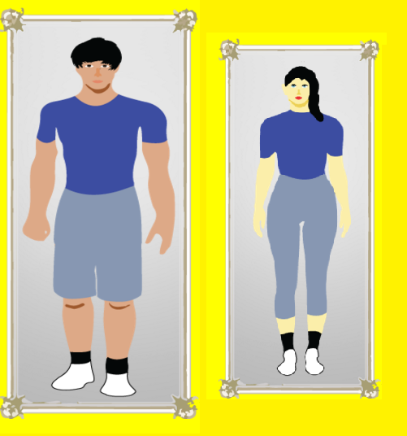
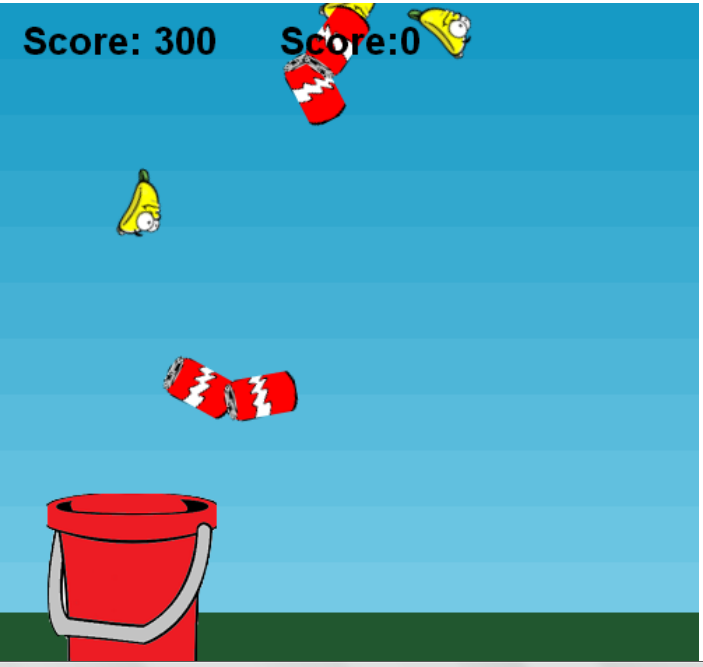
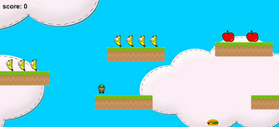

| Games | Description | Sneak Peak |
| Customize Avatar | Customize your avatar the way you want it to look! Have fun :) |  |
| Banana Drop | Use the "right" and "left" buttons to make the bucket to move. Collect the bananas. If you collect 6 sodas, you lose, so avoid the sodas! |  |
| Fruit Collect | Collect the healthy food, not the unhealthy food! |  |